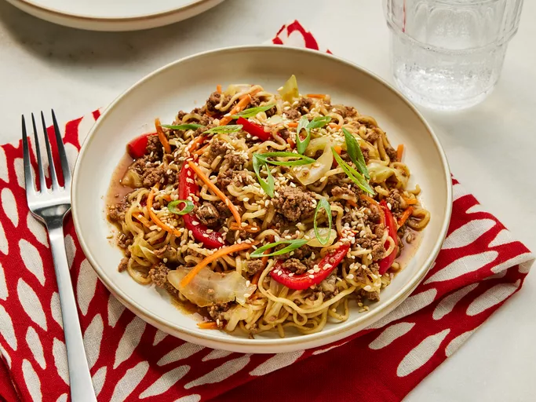

One Pot Ramen

Ingredients
- 1 pound 93/7 ground beef
- 3 cups thinly sliced cabbage
- 1 1/2 cups thinly sliced red bell pepper
- 3 garlic, minced
- 2 cups chicken stock
- 3 tablespoons soy sauce
- 3 tablespoons hoisin sauce
- 2 (3 ounce) packages instant ramen noodles (seasoning packet discarded)
- 1 cup matchstick carrots
- thinly sliced scallions
- toasted sesame seeds
Steps
- Gather all ingredients
- Heat a medium Dutch oven over medium-high heat. Add the beef; cook, stirring occasionally to break the meat into crumbles, until browned and no longer pink, about 5 minutes.
- Stir in cabbage, bell peppers, and garlic. Cook, stirring often, until vegetables begin to wilt and cabbage is translucent, about 5 minutes.
- Stir in chicken broth, soy sauce, hoisin sauce; bring it to a boil over medium high heat. Once at a boil, nestle in ramen, spooning the beef mixture over the ramen as needed to make sure the ramen is fully submerged. Reduce the heat to medium. Cover and cook, undisturbed, until the ramen is tender, 5 to 7 minutes. Stir in carrots. Cover and remove from heat. Let sit until carrots are tender, 1 to 2 minutes.
- Garnish with scallions and sesame seeds and serve
- And never forget, Enjoy!